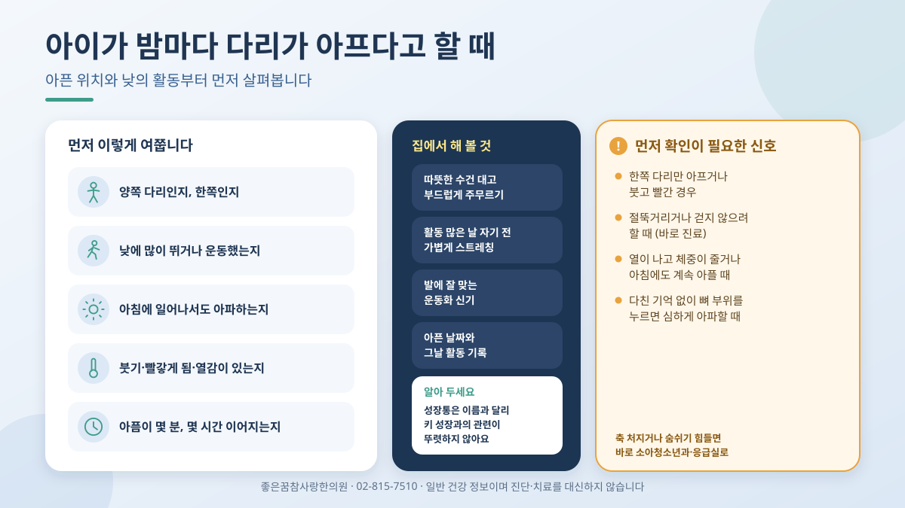

이종호 한의사 감수좋은꿈참사랑한의원 대표원장 (한의사 면허번호 19769)발행 2026-11-23 · 수정 2026-11-26
이 글의 차례
- 왜 이런 불편이 생길 수 있나요
- 왜 하필 밤이 되면 아프다고 할까요?
- 근육이 뻐근한 것과 관절이 붓는 것은 다른 얘기예요
- 흔한 밤 다리 통증은 이런 모습이에요
- 성장통이라는 이름은 이렇게 이해하시면 돼요
- 새 운동을 시작한 주는 특히 살펴 주세요
- 잠과 식사도 다리에 영향을 줘요
- 추운 계절에 더 아파하는 아이도 있어요
- 밤에 아파서 깼을 때는 이렇게 해 주세요
- 노는 걸 막지 않고 도와줄 수 있어요
- 걷는 모습도 가끔 봐 주세요
- 형제나 친구와 다르게 아파할 때
- 먼저 이렇게 여쭙니다
- 일상에서 먼저 해 볼 수 있는 것
- 주물러 줄 때는 이렇게 해 주세요
- 스트레칭은 짧고 부드럽게
- 신발과 노는 곳도 한번 봐 주세요
- 한의학에서는 이런 아이를 함께 살펴요
- 아이 마음도 함께 들어 주세요
- 보호자분께 부탁드릴 건 딱 하나예요
- 한의원에서 함께 살필 수 있는 경우
- 처음 오시면 어떤 순서로 보나요?
- 이렇게 기록해 오시면 상담이 쉬워집니다
- 이런 증상은 먼저 확인이 필요합니다
아이가 밤마다 양쪽 다리가 아프다고 할 때는 낮 활동 뒤 근육 피로와 관련된 이른바 성장통인 경우가 많지만, 한쪽만 붓거나 절뚝거리면 바로 진료를 받아야 해 아픈 위치와 낮의 모습을 먼저 확인합니다. 낮에는 잘 뛰어놀다가 잠들 무렵 종아리나 무릎 뒤가 아프다며 주물러 달라고 우는 아이를 보면 부모님 마음이 쓰입니다.
진료실에서 보호자분들이 이렇게 물으세요. "원장님, 낮엔 그렇게 뛰어다니던 애가 밤만 되면 다리 아프다고 울어요. 꾀병일까요, 어디가 잘못된 걸까요?" 둘 다 아닌 경우가 많아요. 아이는 정말 아픈 거고, 그 아픔이 대개는 걱정할 큰일이 아니에요.
밤에 다리가 아프다는 아이는 생각보다 아주 많아요. 원래 그래요. 하루를 온몸으로 사는 나이라서, 다리가 그 하루를 밤에 이야기하는 거예요. 그러니 먼저 너무 놀라지 않으셔도 돼요. 대신 어디가, 언제, 어떻게 아픈지는 잘 봐 둘 필요가 있어요.
왜 이런 불편이 생길 수 있나요
- 낮에 많이 뛰고 놀면 종아리와 허벅지 근육이 피로해져 저녁에 뻐근하게 느낄 수 있습니다.
- 성장통은 이름과 달리 키 성장과의 관련이 뚜렷하게 밝혀지지 않았습니다.
- 낮에는 놀이에 집중하다가 누워서 쉴 때 아픔을 더 또렷하게 느끼기도 합니다.
- 한의학에서는 아이의 잠과 식사, 쉽게 지치는 경향도 함께 살핍니다.
왜 하필 밤이 되면 아프다고 할까요?
왜인 줄 아세요? 낮에는 다리가 아플 틈이 없거든요. 친구랑 뛰고, 공 차고, 놀이터를 오르내리는 동안에는 재미에 정신이 팔려서 몸이 보내는 작은 신호를 못 느껴요.
그러다 씻고 누워 조용해지면, 그제야 하루 종일 일한 종아리가 "나 오늘 힘들었어" 하고 말을 거는 거예요. 하루 종일 바쁘게 일한 사람이 퇴근해서 소파에 앉는 순간 피곤이 확 몰려오는 것과 비슷하죠.
그래서 많이 뛴 날, 오래 걸은 날, 새로운 운동을 시작한 주에 밤 통증이 몰리는 경우가 많아요. 그리고 아침이 되면 언제 그랬냐는 듯 멀쩡히 뛰어다니는 것도 이런 아이들의 흔한 모습이에요.
근육이 뻐근한 것과 관절이 붓는 것은 다른 얘기예요
저는 아이 다리 통증을 볼 때 꼭 둘로 나눠서 봐요. 저녁이나 밤에 양쪽 종아리, 허벅지, 무릎 뒤 같은 근육 쪽이 뻐근하고 주물러 주면 편해하는 통증이 있고, 관절 자체가 붓거나 한쪽만 계속 아픈 통증이 있어요.
앞의 것은 흔히 말하는 성장통에 가까운 모습이에요. 낮 활동과 함께 오르내리고, 아침이면 대개 잦아들어요. 뒤의 것은 성장통으로 넘기지 말고 아래 '먼저 확인' 항목에 해당하는지 봐 주셔야 해요. 두 개가 아주 다른 얘기거든요.
흔한 밤 다리 통증은 이런 모습이에요
- 양쪽 다리가 번갈아 또는 같이 아프다
- 관절보다 종아리, 허벅지, 무릎 뒤 같은 근육 쪽이 아프다
- 저녁이나 밤에 아프고 아침에는 멀쩡하다
- 주물러 주거나 따뜻하게 해 주면 편해한다
- 낮에는 잘 걷고 잘 뛰며 절뚝거리지 않는다
- 많이 뛴 날에 더 자주 아프다고 한다
대부분 해당한다면 집에서 돌봐 주시면서 기록해 보셔도 괜찮아요. 맞지 않는 항목이 있으면 그 부분을 적어서 오시면 그것부터 같이 봐요.
성장통이라는 이름은 이렇게 이해하시면 돼요
성장통이라는 말을 들으면 "키 크느라 아픈 거니 좋은 거네" 하고 생각하시기 쉬워요. 그런데 키가 자라는 것과 이 통증이 직접 이어져 있다고 보기는 어려워요. 오히려 자라는 시기의 아이가 하루를 아주 활발하게 쓰면서 생기는 근육 피로에 가깝다고 보는 쪽이 많아요.
그러니 "키 크려고 그래, 참아"보다는 "오늘 많이 뛰어서 다리가 힘들었구나" 하고 말해 주세요. 아이는 자기 아픔을 알아봐 주는 말에 훨씬 빨리 진정하거든요.
새 운동을 시작한 주는 특히 살펴 주세요
태권도, 축구, 줄넘기처럼 새 운동을 시작했거나 대회를 앞두고 연습량이 늘었을 때 밤 통증이 몰리는 경우가 많아요. 몸이 아직 그 운동에 익숙해지지 않은 거예요.
운동을 그만두라는 게 아니에요. 처음 몇 주는 횟수나 시간을 조금 줄였다가 천천히 늘려 가면 돼요. 운동 전후에 다리를 가볍게 풀어 주는 습관을 같이 들이면 더 좋고요.
잠과 식사도 다리에 영향을 줘요
잠이 모자라면 근육이 하루 피로를 다 풀지 못한 채로 다음 날을 맞아요. 늦게 자는 날이 이어지면서 밤 통증이 잦아졌다면, 잠드는 시간을 조금 당겨 보는 것도 방법이에요.
낮에 물을 거의 안 마시고 땀을 많이 흘린 날, 끼니를 자주 거른 날에 다리가 더 뻐근하다는 아이도 있어요. 물은 낮 동안 나눠 마시고, 밥은 거르지 않게만 챙겨 주세요. 특별한 음식을 찾기보다 끼니를 고르게 먹는 게 먼저예요.
추운 계절에 더 아파하는 아이도 있어요
날이 추워지면 근육이 움츠러들어 같은 활동을 해도 더 뻐근하게 느끼는 아이가 있어요. 겨울에 밖에서 놀고 들어온 날은 따뜻한 물로 씻겨 다리를 데워 주세요.
잘 때 다리가 이불 밖으로 나와 차가워지지 않게 긴 잠옷 바지를 입히는 것도 도움이 될 수 있어요. 반대로 너무 덥게 입혀 땀이 나면 또 깨니까, 다리만 따뜻하게 한다고 생각하시면 돼요.
밤에 아파서 깼을 때는 이렇게 해 주세요
아이가 울면서 깨면 보호자분도 잠결에 당황하시죠. 먼저 "많이 아프지, 엄마(아빠)가 주물러 줄게" 하고 목소리로 안심시켜 주세요. 아이는 보호자분 목소리만 들어도 조금 가라앉아요.
불은 환하게 켜지 말고 작은 등만 켠 채, 아픈 자리를 손바닥으로 감싸 천천히 주물러 주세요. 아이가 다시 잠들면 그 시간과 자리를 아침에 달력에 적어 두시면 돼요.
노는 걸 막지 않고 도와줄 수 있어요
다리가 아프다고 하면 보호자분 마음에 "당분간 뛰지 마" 소리가 먼저 나와요. 그런데 아이에게 노는 시간은 밥만큼 중요해요. 하고 싶은 걸 못 하게 하면 아이는 아픈 걸 숨기기 시작해요. 그러면 오히려 살필 기회를 놓치게 되죠.
그래서 저는 놀이는 그대로 두고 그 앞뒤를 챙겨 달라고 말씀드려요. 뛰기 전에 발목을 몇 번 돌리고, 놀고 와서는 따뜻하게 씻고, 자기 전에 다리를 쓸어 주는 거예요. 놀면서도 다리가 덜 힘들게 하는 방법을 찾는 게 먼저예요.
걷는 모습도 가끔 봐 주세요
아이가 걸을 때 발이 안쪽으로 많이 꺾이는지, 신발 한쪽 뒤축만 유난히 닳는지, 오래 걸으면 자꾸 주저앉는지 가끔 봐 주세요. 발과 다리의 모양에 따라 같은 활동에도 다리가 더 피로해지는 아이가 있어요.
신발 바닥 사진을 한 장 찍어 오시면 진료실에서 같이 볼 수 있어요. 닳은 자리가 아이가 어떻게 걷는지를 생각보다 많이 알려 주거든요.
형제나 친구와 다르게 아파할 때
같이 뛰어놀았는데 한 아이만 밤에 아프다고 하면 "너만 왜 그래" 소리가 나오기 쉬워요. 그런데 아이마다 근육의 힘도, 지치는 정도도, 아픔을 느끼는 정도도 달라요. 원래 그래요. 비교하는 말은 아이를 움츠러들게만 해요.
예를 들어 형은 아무렇지 않은데 동생만 아프다면, 동생에게는 그 활동량이 조금 많았던 거예요. 동생 몸에 맞게 양을 조절해 주면 되는 거지, 동생이 약한 게 아니라는 걸 아이에게도 말해 주세요.

먼저 이렇게 여쭙니다
- 아픈 곳이 양쪽 다리인가요, 한쪽인가요?
- 아픈 날 낮에 많이 뛰거나 운동했나요?
- 아침에 일어나서도 아파하나요?
- 아픈 곳이 붓거나 빨갛거나 열감이 있나요?
- 아픈 것이 대개 몇 분, 몇 시간 정도 이어지나요?

일상에서 먼저 해 볼 수 있는 것
- 아플 때 따뜻한 수건을 대고 부드럽게 주물러 주기
- 활동이 많은 날 자기 전 가볍게 다리 스트레칭하기
- 발에 잘 맞는 운동화 신기
- 아픈 날짜와 그날 활동을 기록하기
- 아픈 날은 그날 밤 따뜻하게 씻기고 일찍 쉬게 하기
주물러 줄 때는 이렇게 해 주세요
아이 다리는 어른보다 근육이 얇고 부드러워요. 그래서 세게 누르기보다 손바닥 전체로 감싸듯이, 발목에서 무릎 쪽으로 천천히 쓸어 올려 주세요. 아이가 "거기 시원해" 하는 곳을 조금 더 머물러 주시면 돼요.
따뜻한 수건은 보호자분 손목 안쪽에 먼저 대 보고 뜨겁지 않은지 확인한 뒤 써 주세요. 아이 피부는 얇아서 어른에게 적당한 온도도 뜨겁게 느낄 수 있거든요. 잠든 아이 다리 위에 오래 올려 두지는 마세요.
스트레칭은 짧고 부드럽게
- 벽에 두 손을 대고 한 발을 뒤로 빼서 종아리를 천천히 늘이기
- 바닥에 앉아 다리를 펴고 발끝을 몸 쪽으로 당기기
- 누워서 무릎을 가슴 쪽으로 가볍게 끌어안기
한 동작에 열을 세는 정도면 충분하고, 보호자분이 옆에서 같이 따라 하면 아이도 더 즐겁게 해요. 아이가 아프다고 하면 거기서 멈추세요. 잘 늘이는 게 목표가 아니라, 잠들기 전에 다리에게 "오늘 수고했어" 하고 풀어 주는 시간이라고 생각하시면 돼요.
신발과 노는 곳도 한번 봐 주세요
아이 발은 금방 자라서, 지난 계절에 산 운동화가 어느새 꽉 끼는 경우가 많아요. 발가락 끝에 엄지손가락 한 마디쯤 여유가 있는지, 뒤꿈치가 헐렁하지 않은지 한번 확인해 주세요.
딱딱한 운동장이나 아스팔트에서 오래 뛴 날, 밑창이 얇은 실내화나 샌들로 많이 걸은 날 밤 통증이 늘었다는 보호자분도 계세요. 아픈 날 무엇을 신고 어디서 놀았는지 적어 두시면 실마리가 될 수 있어요.
한의학에서는 이런 아이를 함께 살펴요
한의학에서는 다리 통증만 따로 보지 않고, 아이가 쉽게 지치는지, 잘 먹는지, 잠은 깊이 자는지를 함께 봐요. 예를 들어 입이 짧아 밥을 적게 먹고, 조금만 걸어도 업어 달라고 하고, 밤 통증이 잦은 아이가 있어요.
이런 아이는 근육이 피로를 회복할 힘이 조금 모자란 상태일 수 있어서, 식사와 잠을 같이 살피는 게 필요해요. 그러니까 사실은 다리만 주무르는 게 아니라, 아이 몸 전체가 하루 피로를 잘 풀고 다음 날을 맞을 수 있게 돕는 거예요.
아이 마음도 함께 들어 주세요
간혹 "관심받고 싶어서 그러는 것 같아요"라고 말씀하시는 분도 있어요. 동생이 생겼거나 보호자분이 바빠진 시기에 밤 통증이 늘기도 하거든요. 그래도 아이에게는 진짜 아픈 거예요. 꾀병으로 몰지 마시고 다리를 먼저 주물러 주세요.
그 시간이 아이에게는 하루 중 보호자분을 독차지하는 시간이 되기도 해요. 다리를 주무르면서 오늘 있었던 이야기를 나누다 보면, 통증보다 마음이 먼저 풀리는 날도 있어요.
보호자분께 부탁드릴 건 딱 하나예요
위에 적은 걸 다 하시려면 힘들어요. 그래서 저는 하나만 부탁드려요. 아이가 아프다고 한 날, 달력에 그날 무엇을 하고 놀았는지 한 줄만 적어 주세요.
이것만 해 주시고 딴 건 편하게 하셔도 돼요. 아이 다리와 몸을 살피는 건 제가 맡을게요. 2주만 모아도 많이 뛴 날과 아픈 날이 겹치는지, 아니면 상관없이 아픈지가 보이거든요. 그게 다음 순서를 정하는 데 가장 큰 단서가 돼요.
한의원에서 함께 살필 수 있는 경우
- 밤에 다리 통증으로 잠을 자주 깨는 아이의 경우 잠과 활동을 함께 살핍니다.
- 쉽게 지치고 입이 짧은 경우 식사와 몸의 리듬을 함께 살핍니다.
- 보호자가 집에서 해 줄 수 있는 방법을 함께 정리합니다.
좋은꿈참사랑한의원에서는 아이의 맥을 먼저 짚고, 아픈 위치와 낮의 활동을 보호자와 아이에게 함께 들으면서 다리 모양과 걷는 모습도 함께 살핍니다. 필요하다고 판단될 때 아이의 나이와 상태에 맞는 방법을 보호자와 함께 정하고, 정형외과나 소아청소년과 확인이 먼저 필요해 보이면 그렇게 안내합니다.
처음 오시면 어떤 순서로 보나요?
처음 오시면 저는 아이 맥부터 짚어요. 모든 분께 그렇게 하거든요. 보호자분과 함께 들어오시면 되고, 아이가 긴장하면 좋아하는 놀이 이야기부터 나누며 편해진 다음에 짚어요.
그다음 아이에게 "어디가 아파? 손가락으로 짚어 볼래?" 하고 직접 물어봐요. 아이가 가리키는 자리와 보호자분이 기억하는 자리가 다를 때도 있어서, 둘 다 듣는 게 중요하거든요. 그리고 진료실 안에서 몇 걸음 걸어 보게 하면서 걷는 모습을 봐요.
한약은 다리 통증만 보고 정하지 않아요. 식사와 잠, 쉽게 지치는지를 함께 본 뒤 필요하다고 판단될 때 상담하고, 먹고 있는 약이나 영양제가 있으면 먼저 확인해요. 먹는 중에 불편해 보이면 복용을 멈추고 연락 주세요.
다시 오시면 지난번 기록부터 이어서 봐요. 아픈 밤이 줄었는지, 신발이나 활동을 바꾼 뒤 어땠는지 비교하면서, 보통 한 달 정도 지켜보고 다음을 같이 정해요.
이렇게 기록해 오시면 상담이 쉬워집니다
- 아팠던 날짜와 시간, 아픈 위치(그림으로 표시해도 좋습니다)
- 그날의 활동과 운동량
- 아침에도 아팠는지, 절뚝거렸는지
- 붓기나 열감이 있었다면 사진
- 아픈 날 신었던 신발과 뛰어논 장소(운동장, 실내 등)
다리 그림을 한 장 그려 두고, 아픈 날마다 그 자리에 점을 찍어 보세요. 점이 양쪽 다리에 고루 흩어져 있는지, 한 자리에만 몰려 있는지가 한눈에 보여요. 아이에게 직접 찍게 하면 재미있어하는 경우도 많아요.
아픈 모습을 짧게 영상으로 찍어 두셔도 좋아요. 아이가 어떻게 다리를 잡고 있는지, 주물러 줄 때 어떤 표정인지 보면 진료실에서 말로 듣는 것보다 훨씬 많이 알 수 있거든요. 아이가 싫어하면 굳이 찍지 않으셔도 돼요.
궁금한 건 편하게 물어보세요. 오시면 아이가 짚어 주는 자리부터 같이 천천히 볼게요.
이런 증상은 먼저 확인이 필요합니다
- 한쪽 다리만 아프거나 붓고 빨간 경우
- 절뚝거리거나 걷지 않으려 하는 경우(바로 진료)
이런 신호가 있으면 한의원보다 가까운 병원이나 응급실을 먼저 찾으세요.

여쭙는 것
- 아픈 곳이 양쪽 다리인가요, 한쪽인가요?
- 아픈 날 낮에 많이 뛰거나 운동했나요?
- 아침에 일어나서도 아파하나요?
생활에서 해 볼 것
- 아플 때 따뜻한 수건을 대고 부드럽게 주물러 주기
- 활동이 많은 날 자기 전 가볍게 다리 스트레칭하기
- 발에 잘 맞는 운동화 신기
한의원에서 함께 살필 것
- 밤에 다리 통증으로 잠을 자주 깨는 아이의 경우 잠과 활동을 함께 살핍니다.
- 쉽게 지치고 입이 짧은 경우 식사와 몸의 리듬을 함께 살핍니다.
- 보호자가 집에서 해 줄 수 있는 방법을 함께 정리합니다.
먼저 확인이 필요한 신호
- 한쪽 다리만 아프거나 붓고 빨간 경우
- 절뚝거리거나 걷지 않으려 하는 경우(바로 진료)
한눈에 보는 표
| 구분 | 핵심 |
|---|---|
| 여쭙는 것 | 아픈 곳이 양쪽 다리인가요, 한쪽인가요? 아픈 날 낮에 많이 뛰거나 운동했나요? |
| 생활에서 해 볼 것 | 아플 때 따뜻한 수건을 대고 부드럽게 주물러 주기 활동이 많은 날 자기 전 가볍게 다리 스트레칭하기 |
| 한의원에서 함께 살필 것 | 밤에 다리 통증으로 잠을 자주 깨는 아이의 경우 잠과 활동을 함께 살핍니다. 쉽게 지치고 입이 짧은 경우 식사와 몸의 리듬을 함께 살핍니다. |
| 먼저 확인이 필요한 신호 | 한쪽 다리만 아프거나 붓고 빨간 경우 절뚝거리거나 걷지 않으려 하는 경우(바로 진료) |
자주 묻는 질문
성장통이면 키가 크는 건가요?
이름과 달리 키 성장과 직접 관련이 있다고 단정하기는 어렵습니다. 아이를 편하게 해 주는 것이 먼저입니다.
병원에서 검사를 해야 하나요?
위의 확인 신호가 있으면 소아청소년과나 정형외과 진료를 권합니다.
아플 때 진통제를 먹여도 되나요?
나이에 맞는 약과 양은 소아청소년과나 약사와 상의하세요. 자주 필요하다면 꼭 진료를 받으세요.
운동을 줄여야 하나요?
아이가 좋아하는 활동은 이어 가되, 아픈 날이 잦으면 운동량과 신발을 함께 살펴봅니다.
언제까지 이런 통증이 이어지나요?
아이마다 달라요. 시기와 횟수는 기록을 보며 함께 지켜보고, 모습이 달라지면 그때 다시 살펴봅니다.
좋은꿈참사랑한의원은 재진 때 지난번 이야기부터 이어서 여쭙니다. 진료시간과 예약은 오시는 길에서 확인하세요.
어디서 상담받을 수 있나요?
좋은꿈참사랑한의원은 서울 동작구 만양로2길 2 신성빌딩 3층·5층(서울 동작구 상도동, 7호선 상도역 3번 출구 근처)에 있습니다. 한의사 3명(이종호 대표원장, 조영기 수석진료원장, 정원영 진료원장)이 진료합니다. 진료시간은 평일 09:30~20:00(점심 13:00~14:00), 토·일·공휴일 09:30~15:00이며, 방문 전 전화로 확인을 권합니다. 예약은 네이버 예약, 카카오톡 상담, 전화 02-815-7510로 받습니다.
이 글은 일반적인 건강 정보이며 개인의 진단이나 치료를 대신하지 않습니다. 증상이 있거나 복용 중인 약이 있다면 진료를 통해 확인하세요. 치료 효과는 개인마다 다를 수 있습니다.
작성 기준: 일반적으로 알려져 있는 건강 정보를 참고해 정리했습니다(대표원장 감수). 증상 기록은 1~2주 동안 하루 1회, 비슷한 시간에 적어 오시면 지난 상태와 비교하기 쉽습니다.